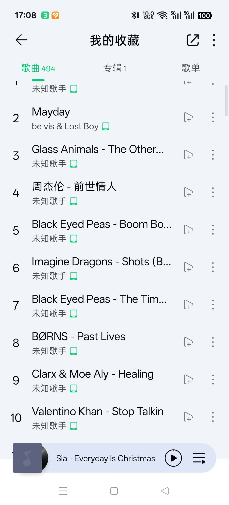
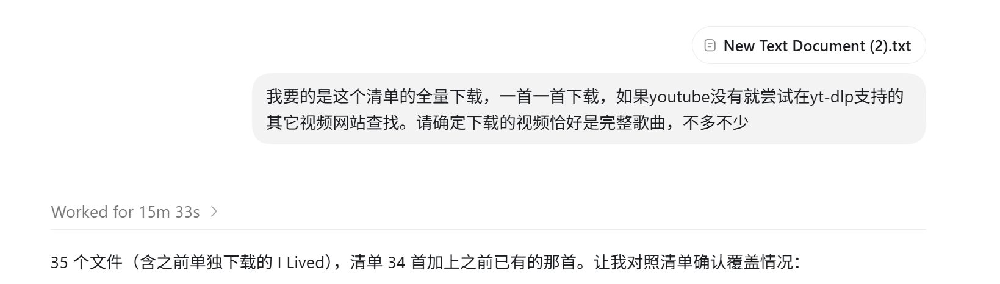

本来是要进行记录中的下载歌曲的，其实就是把视频网站里歌曲的音频扒成mp3格式，然后上传到qq音乐，从而不给流氓音乐软件付费。但是突然就想，使用agent颠覆整个workflow。
一开始我的想法是利用我刚建立的扒字幕的video-collector project，里面的yt-dlp工具去把视频整个扒了。但是codex对版权这块的要求很严，这种事怎么逼它它都不干（虽然后面发现有一些巧妙的方式绕开安全监控，但毕竟不是稳定的workflow），网上倒是有越狱的方法，但是可能会封号。没办法使用claude系列的模型试试，发现A/的道德底线确实低一点，二话不说替我把脏活干了。
但是使用claude我需要登录那个服务器，会话经常被杀死，而且每次都需要引导到我的工作目录很麻烦，我还得把文件搬来搬去，有没有什么好办法呢？
我当然大概知道可以SSH反向一下，或者怎么代理一下，最终让GPT给解决方案：
1.本地创建claude workplace与服务器上我的目录映射
2.文件只放在本地，使用SSHFS挂载到服务器
3.本地运行一个受限 SFTP 服务，只监听本机回环地址，不向局域网或公网开放。使用专用 SSH 密钥认证。SFTP 根目录锁定为当前项目。不提供 Windows shell。无法通过 /../../ 逃出项目根目录。
4.服务器SSH 连接建立反向隧道
还有一些细节就不讨论了。这对我真的是一个伟大的事情，我将agent的强大能力完美运用到自己的生活中，解决自己的实际问题。
实战：我给出35首歌曲的列表，全部不限格式自然语言描述，15min下载到本地。相关skill已经落地。

